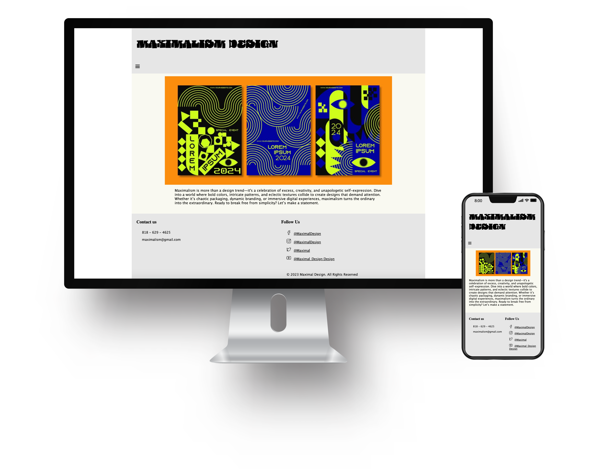
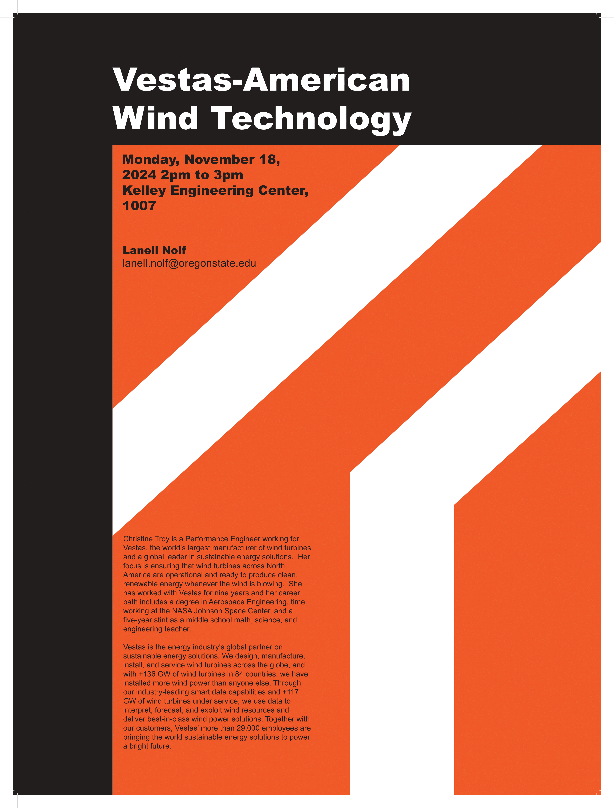

I’m a creative and detail-oriented college student at OSU, pursuing my passion for graphic design with a focus on logo, web, marketing, and product design. My work is driven by a love for solving design challenges and creating solutions that are not only visually appealing but also functional and impactful.
In addition to design, I have a deep appreciation for photography, which allows me to explore new perspectives and bring a unique visual sensibility to my projects. Whether I’m crafting a brand identity, designing a user-friendly website, or capturing moments through my lens, I strive to tell stories that connect with people and leave a lasting impression.
Below, you’ll find a selection of my work that showcases my skills, creativity, and dedication to delivering high-quality results. I’m always excited to take on new challenges and collaborate on innovative ideas—let’s create something amazing!

Global Goal #11 - Sustainable Cities
This poster design focuses on the United Nations Sustainable Development Goal #11: making cities inclusive, safe, resilient, and sustainable. Through thoughtful visuals and messaging, the project highlights the importance of creating urban spaces that prioritize community, accessibility, and environmental responsibility.

Maximalism Movement Website
This project involved designing a responsive website to explore and inform users about the Maximalism movement. The site features interconnected pages that showcase bold designs, vibrant aesthetics, and the philosophy behind embracing excess in art and lifestyle.

Vestas-American Wind Technology Event Poster
This Swiss-style poster promotes a local OSU event featuring Vestas, a global leader in sustainable wind energy. The design combines clean typography and structured layouts to highlight the event details and Vestas’ mission of advancing renewable energy solutions.

Japanese-Inspired Car Posters
This personal project combines my passion for photography and my journey learning Japanese to create a series of car posters. The designs blend cultural elements with automotive aesthetics, resulting in visually striking pieces for personal display.